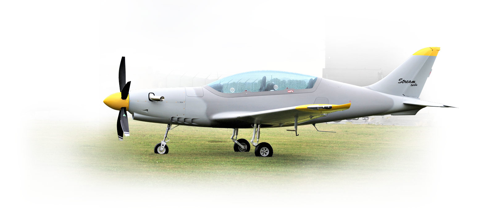
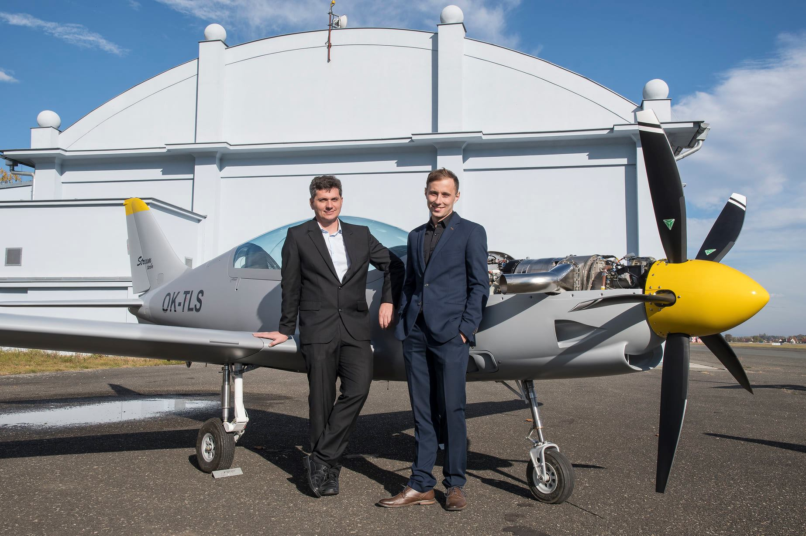
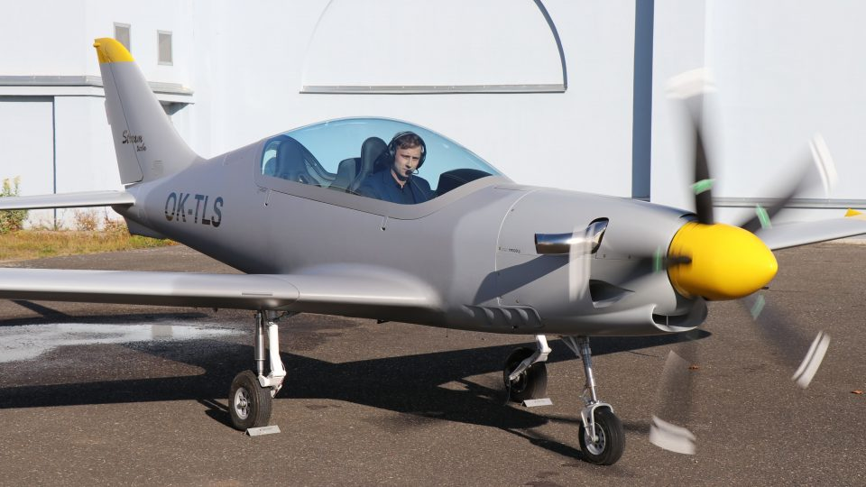
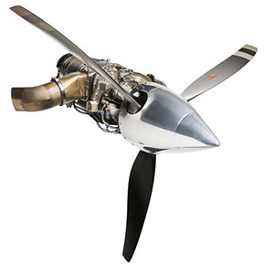
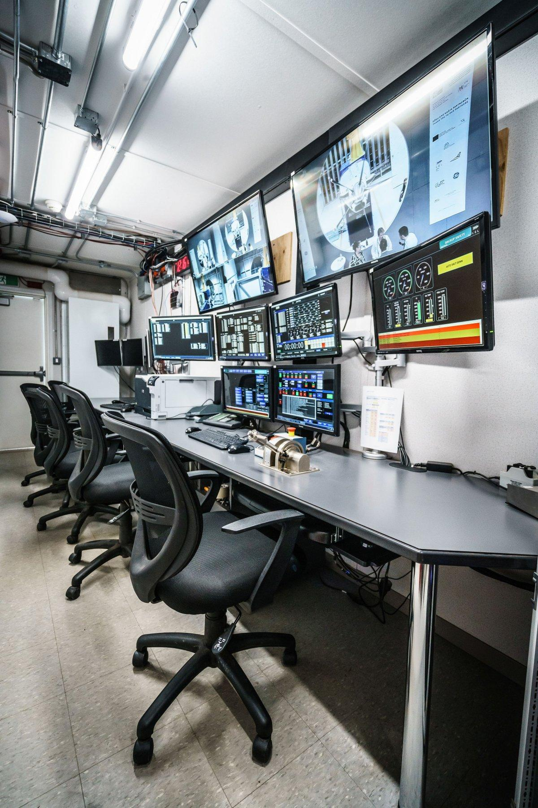

TurboStream is a high-performance machine that is sporty and fun to fly. Think of it as an efficient luxury sports car for the sky. With the TurboStream, you master the enormous power of a TP 100 turboprop, without sacrificing safety or reliability. You want the power! You want the excitement! You want reliability! It’s controlled brute force wrapped in elegant Stream lines. It’s the TurboStream!
The newly shaped front end of TurboStream leaves no doubt about the power it contains.
But this shape doesn't detract from the elegance of the Stream's clean lines. We didn't compromise on the luxurious design details. We didn't compromise on maintaining excellent flight characteristics. We didn't compromise on anything, and we believe you can see that in TurboStream.
Characteristics:
2 tandem seats
Reinforced construction
Retractable steerable bow landing gear
Extended capacity of fuel tanks
Made of Kevlar and carbon fibers
Speeds:
Stall speed: 87 km / h (46 knots)
Design dive speed: 400 km / h (216 knots)
But this shape doesn't detract from the elegance of the Stream's clean lines. We didn't compromise on the luxurious design details. We didn't compromise on maintaining excellent flight characteristics. We didn't compromise on anything, and we believe you can see that in TurboStream.
Characteristics:
2 tandem seats
Reinforced construction
Retractable steerable bow landing gear
Extended capacity of fuel tanks
Made of Kevlar and carbon fibers
Speeds:
Stall speed: 87 km / h (46 knots)
Design dive speed: 400 km / h (216 knots)

TurboStream inherited the basic outer curves of the Stream. But we took the TurboStream's sleek look to the next level.
Its fuselage is not only beautiful, but also safe and durable thanks to the use of the most modern CAD / CAM technologies.
TurboStream may have inherited her outer curves from the Stream, but the TurboStream is completely different under this elegance. Because of the increased speed that comes with the TurboCharge, its design needed to be modified. This modification easily transfers the increased load caused by higher speeds. It also accommodates the elevated maximum take-off weight. In addition, the airframe has higher capacity tanks to accommodate the fuel requirements of a turboprop propulsion unit.
Safety is paramount. That's why carbon and Kevlar fibers were used to guarantee the highest possible strength. Besides strength, these fibers are light enough to maintain needed low weight. To provide maximum protection to the crew, the inner part of the fuselage is made of a reinforced Kevlar shell.
Its fuselage is not only beautiful, but also safe and durable thanks to the use of the most modern CAD / CAM technologies.
TurboStream may have inherited her outer curves from the Stream, but the TurboStream is completely different under this elegance. Because of the increased speed that comes with the TurboCharge, its design needed to be modified. This modification easily transfers the increased load caused by higher speeds. It also accommodates the elevated maximum take-off weight. In addition, the airframe has higher capacity tanks to accommodate the fuel requirements of a turboprop propulsion unit.
Safety is paramount. That's why carbon and Kevlar fibers were used to guarantee the highest possible strength. Besides strength, these fibers are light enough to maintain needed low weight. To provide maximum protection to the crew, the inner part of the fuselage is made of a reinforced Kevlar shell.

The PBS TP100 is a turboprop engine, which is ideal for small aircraft and unmanned aerial vehicles (UAV’s) and is particularly suitable for use by the rescue services, the police, the military (for reconnaissance purposes) and in agriculture.
These turbojet engines can also be used in a number of military applications and also for other purposes such as for Vertical Take-Off and Landing of UAV’s. One of the main advantages of this turboprop engine is its light weight combined with a power thrust of 241 HP (180 kW) and its capacity to achieve flight levels of 29,500 ft. (9,000 m) with a maximum starting height of 19,700 ft. (6,000 m). The system is designed so that the engine can be installed in the aircraft in either pusher or tractor mode.
These turbojet engines can also be used in a number of military applications and also for other purposes such as for Vertical Take-Off and Landing of UAV’s. One of the main advantages of this turboprop engine is its light weight combined with a power thrust of 241 HP (180 kW) and its capacity to achieve flight levels of 29,500 ft. (9,000 m) with a maximum starting height of 19,700 ft. (6,000 m). The system is designed so that the engine can be installed in the aircraft in either pusher or tractor mode.


TP100
Turboprop test facility